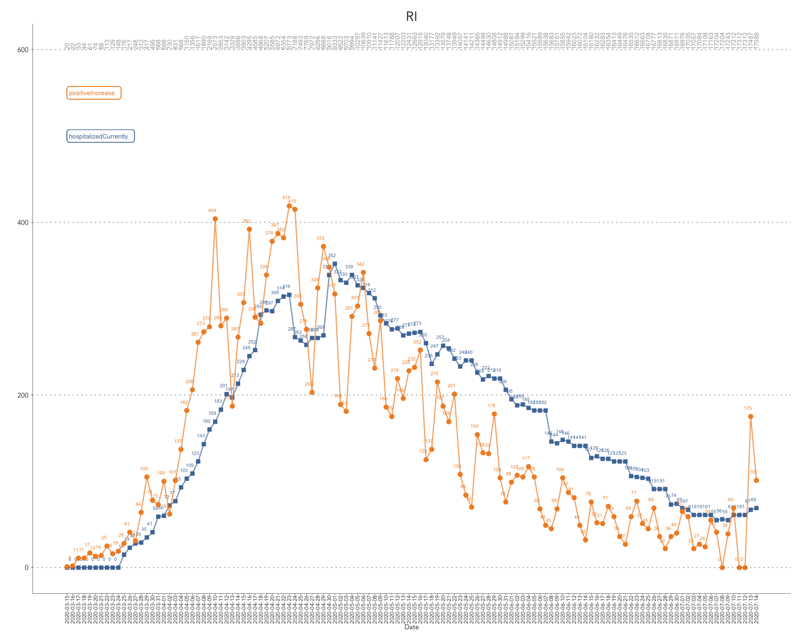
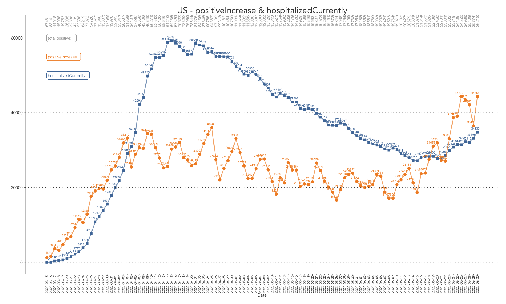
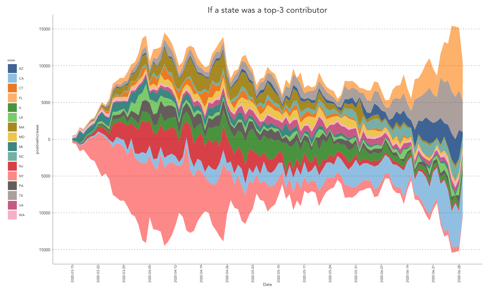
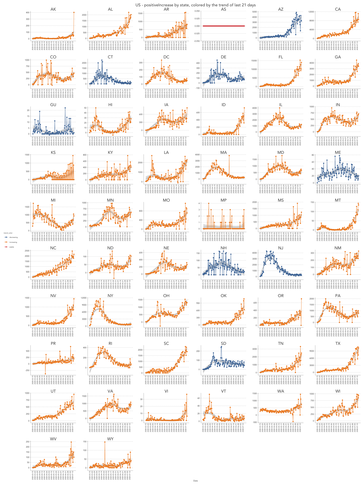
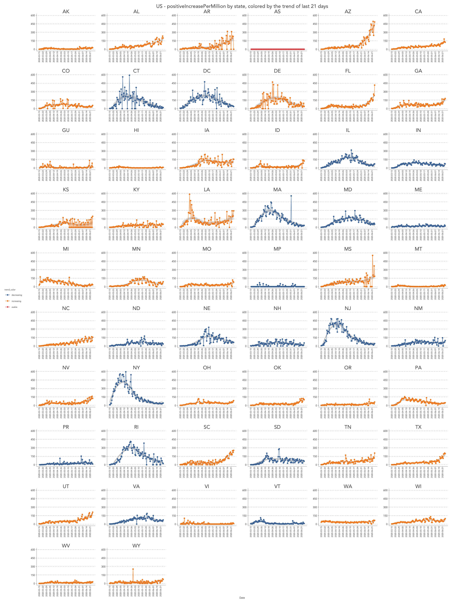
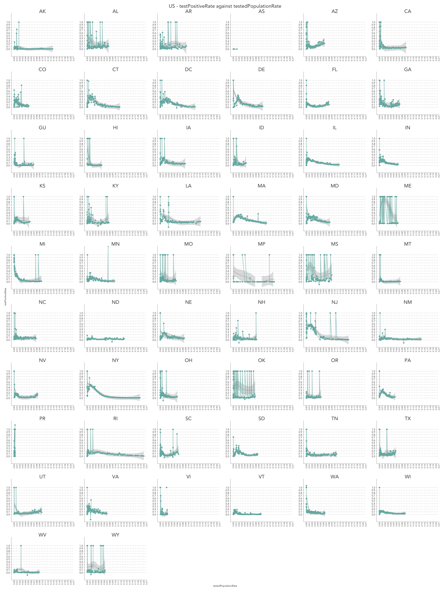
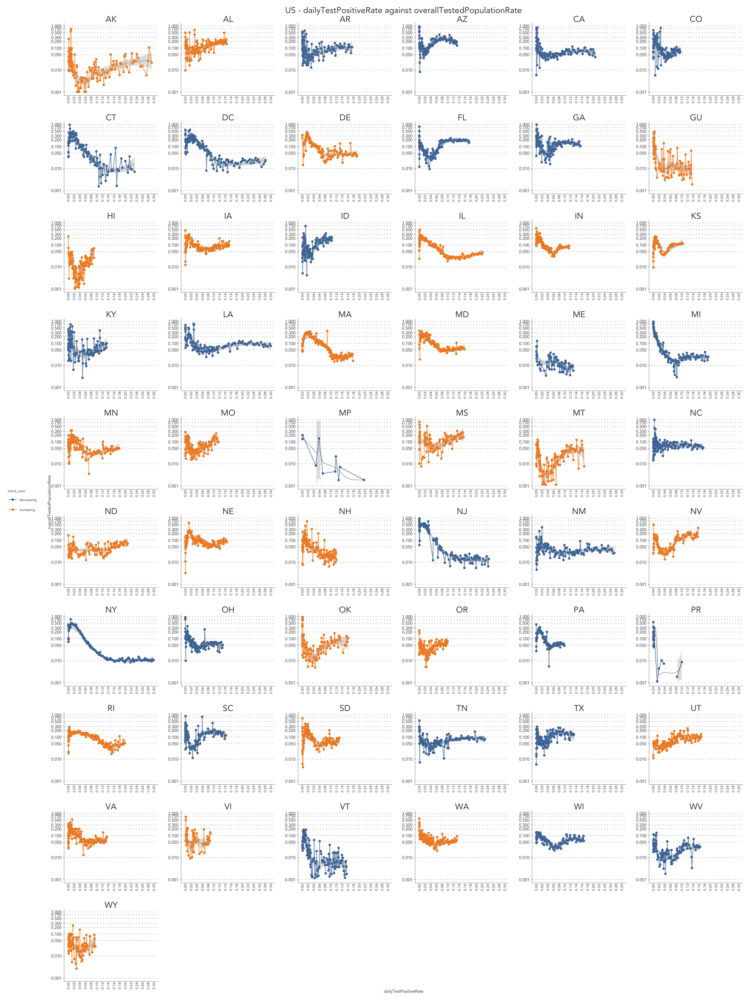
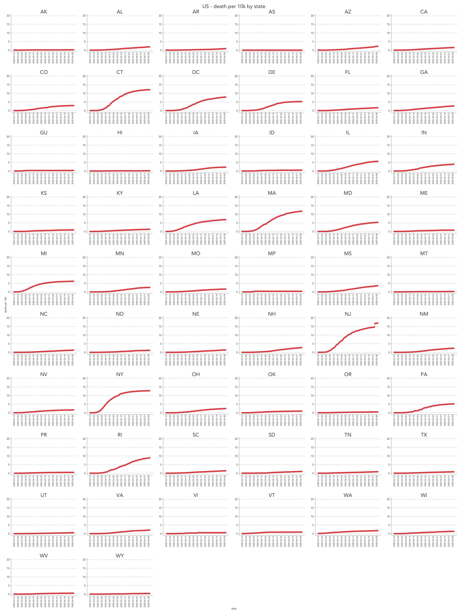
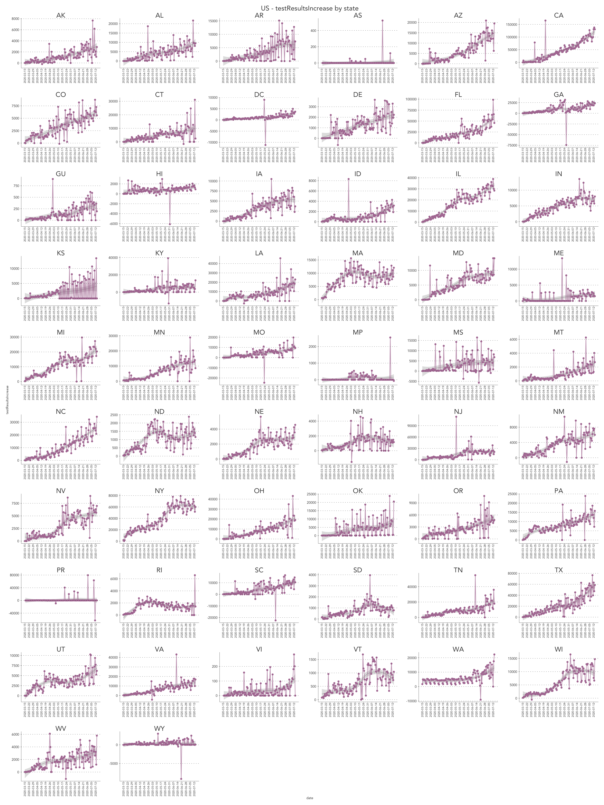

COVID 19 - some simple data visualizations for US data
Some other covid19 visualizations:
https://coronavirus.1point3acres.com/
https://coronavirus.jhu.edu/map.html
# data source https://www.census.gov/data/datasets/time-series/demo/popest/2010s-state-total.html and wikipedia
df_population <- data.frame(
state = c("AK", "AL", "AR", "AS", "AZ", "CA", "CO", "CT", "DC", "DE", "FL",
"GA", "GU", "HI", "IA", "ID", "IL", "IN", "KS", "KY", "LA", "MA",
"MD", "ME", "MI", "MN", "MO", "MP", "MS", "MT", "NC", "ND", "NE",
"NH", "NJ", "NM", "NV", "NY", "OH", "OK", "OR", "PA", "PR", "RI",
"SC", "SD", "TN", "TX", "UT", "VA", "VI", "VT", "WA", "WI", "WV", "WY"),
population = c(731545, 4903185, 3017804, 55465 , 7278717, 39512223, 5758736, 3565287, 705749, 973764, 21477737,
10617423, 165768, 1415872, 3155070, 1787065, 12671821, 6732219, 2913314, 4467673, 4648794, 6892503,
6045680, 1344212, 9986857, 5639632, 6137428, 56882, 2976149, 1068778, 10488084, 762062, 1934408,
1359711, 8882190, 2096829, 3080156, 19453561, 11689100, 3956971, 4217737, 12801989, 3193694, 1059361,
5148714, 884659, 6829174, 28995881, 3205958, 8535519, 106977 , 623989, 7614893, 5822434, 1792147, 578759)
)
# The Atlantic Monthly Group (CC BY-NC 4.0)
# source: https://covidtracking.com/api
df_states <- fread("https://covidtracking.com/api/v1/states/daily.csv") %>%
replace(is.na(.), 0) %>%
inner_join(df_population, by = "state")%>%
mutate(date = as.Date(as.character(date), "%Y%m%d"))
tableau10 <- as.list(ggthemes_data[["tableau"]][["color-palettes"]][["regular"]][[1]][,2])$value
first_day <- as.Date("2020-03-15") # to select a date
today <- as.Date(toString(max(df_states$date)))
kable(head(df_states, n = 3))| date | state | positive | negative | pending | hospitalizedCurrently | hospitalizedCumulative | inIcuCurrently | inIcuCumulative | onVentilatorCurrently | onVentilatorCumulative | recovered | dataQualityGrade | lastUpdateEt | dateModified | checkTimeEt | death | hospitalized | dateChecked | totalTestsViral | positiveTestsViral | negativeTestsViral | positiveCasesViral | deathConfirmed | deathProbable | fips | positiveIncrease | negativeIncrease | total | totalTestResults | totalTestResultsIncrease | posNeg | deathIncrease | hospitalizedIncrease | hash | commercialScore | negativeRegularScore | negativeScore | positiveScore | score | grade | population |
|---|---|---|---|---|---|---|---|---|---|---|---|---|---|---|---|---|---|---|---|---|---|---|---|---|---|---|---|---|---|---|---|---|---|---|---|---|---|---|---|---|---|
| 2020-07-18 | AK | 2159 | 166204 | 0 | 26 | 0 | 0 | 0 | 1 | 0 | 708 | A | 7/18/2020 00:00 | 2020-07-18T00:00:00Z | 07/17 20:00 | 18 | 0 | 2020-07-18T00:00:00Z | 168363 | 0 | 0 | 0 | 18 | 0 | 2 | 78 | 2871 | 168363 | 168363 | 2949 | 168363 | 1 | 0 | ec66e86851a02568f6d8d884518235b940e32c12 | 0 | 0 | 0 | 0 | 0 | 0 | 731545 |
| 2020-07-18 | AL | 65234 | 509261 | 0 | 1416 | 7782 | 0 | 982 | 0 | 524 | 29736 | B | 7/18/2020 11:00 | 2020-07-18T11:00:00Z | 07/18 07:00 | 1286 | 7782 | 2020-07-18T11:00:00Z | 573441 | 0 | 0 | 64180 | 1253 | 33 | 1 | 2143 | 9237 | 574495 | 574495 | 11380 | 574495 | 21 | 198 | 29b2fcca60f07780fab34a3bbb748557f2a1adc4 | 0 | 0 | 0 | 0 | 0 | 0 | 4903185 |
| 2020-07-18 | AR | 31762 | 381243 | 0 | 464 | 2135 | 0 | 0 | 97 | 304 | 24776 | A+ | 7/17/2020 19:56 | 2020-07-17T19:56:00Z | 07/17 15:56 | 353 | 2135 | 2020-07-17T19:56:00Z | 413005 | 0 | 0 | 31762 | 0 | 0 | 5 | 0 | 5508 | 413005 | 413005 | 5508 | 413005 | 0 | 65 | 39d1357b32eafdbd0904625524286312ebab932b | 0 | 0 | 0 | 0 | 0 | 0 | 3017804 |
Rhode Island (as I live in RI now)
df_states %>% filter(state == "RI") %>%
ggplot() %>%
+ geom_label(x = first_day, y = 650, color = "darkgray", label = "total positive", size = 2, hjust = 0) %>%
+ geom_text(mapping = aes(x = date, y = 600, label = positive), color = "darkgray", size = 2, angle = 90, hjust = 0) %>%
#+ geom_label(x = first_day, y = 800, color = "black", label = "death", size = 2, hjust = 0) %>%
+ geom_label(x = first_day, y = 550, color = tableau10[2], label = "positiveIncrease", size = 2, hjust = 0) %>%
+ geom_label(x = first_day, y = 500, color = tableau10[1], label = "hospitalizedCurrently", size = 2, hjust = 0) %>%
# + geom_line(mapping = aes(x = date, y = death), alpha = 0.7, color = "black", size = LINE_SIZE) %>%
# + geom_text(mapping = aes(x = date - 0.5, y = death + 10, label = death), color = "black", size = 1.5) %>%
# + geom_point(mapping = aes(x = date, y = death), color = "black", shape = 10) %>%
+ geom_line(mapping = aes(x = date, y = hospitalizedCurrently), alpha = 0.7, color = tableau10[1], size = LINE_SIZE) %>%
+ geom_text(mapping = aes(x = date - 0.5, y = hospitalizedCurrently + 10, label = hospitalizedCurrently), color = tableau10[1], size = 1.5) %>%
+ geom_point(mapping = aes(x = date, y = hospitalizedCurrently), color = tableau10[1], shape = 15) %>%
+ geom_line(mapping = aes(x = date, y = positiveIncrease), alpha = 0.7, color = tableau10[2], size = LINE_SIZE) %>%
+ geom_text(mapping = aes(x = date - 0.5, y = positiveIncrease + 10, label = positiveIncrease), color = tableau10[2], size = 1.5) %>%
+ geom_point(mapping = aes(x = date, y = positiveIncrease), color = tableau10[2]) %>%
+ scale_x_date(limits = c(first_day, today), breaks = seq(first_day, today, by = "day")) %>%
+ xlab("Date") + ylab("") + ggtitle("RI")
US - all states
df_states %>% group_by(date) %>%
summarise(positiveIncrease = sum(positiveIncrease), hospitalizedCurrently = sum(hospitalizedCurrently), total = sum(positive)) %>%
ungroup() %>%
ggplot() %>%
+ geom_label(x = first_day, y = 68000, color = "darkgray", label = "total positive: ", size = 2, hjust = 0) %>%
+ geom_text(mapping = aes(x = date, y = 70000, label = total), color = "darkgray", size = 2, angle = 90, hjust = 0) %>%
+ geom_label(x = first_day, y = 50000, color = tableau10[1], label = "hospitalizedCurrently", size = 2, hjust = 0) %>%
+ geom_label(x = first_day, y = 55000, color = tableau10[2], label = "positiveIncrease", size = 2, hjust = 0) %>%
+ geom_line(mapping = aes(x = date, y = hospitalizedCurrently), alpha = 0.7, color = tableau10[1], size = LINE_SIZE) %>%
+ geom_text(mapping = aes(x = date - 0.5, y = hospitalizedCurrently + 1000, label = hospitalizedCurrently), color = tableau10[1], size = 1.5) %>%
+ geom_point(mapping = aes(x = date, y = hospitalizedCurrently), color = tableau10[1], shape = 15) %>%
+ geom_line(mapping = aes(x = date, y = positiveIncrease), alpha = 0.7, color = tableau10[2], size = LINE_SIZE) %>%
+ geom_text(mapping = aes(x = date - 0.5, y = positiveIncrease + 1000, label = positiveIncrease), color = tableau10[2], size = 1.5) %>%
+ geom_point(mapping = aes(x = date, y = positiveIncrease), color = tableau10[2]) %>%
+ scale_x_date(limits = c(first_day, today), breaks = seq(first_day, today, by = "day")) %>%
+ xlab("Date") + ylab("") + ggtitle("US - positiveIncrease & hospitalizedCurrently")
US - daily top-3 contributors
If a state has been a top 3 contributor
as_top <- df_states %>%
filter(date > first_day)%>%
mutate(str_date = as.character(date))%>%
group_by(str_date) %>%
arrange(positiveIncrease, by_group = TRUE)%>%
slice_tail(n = 3) %>%
ungroup() %>%
summarise(unique(state))
as_top <- unlist(as_top)
df_states %>%
filter(state %in% as_top) %>%
ggplot() %>%
+ stat_steamgraph(mapping = aes(x = date, y = positiveIncrease, group = state, fill = state)) %>%
+ scale_x_date(limits = c(first_day, today), breaks = seq(first_day, today, by = "week")) %>%
+ scale_y_continuous(breaks = seq(-20000, 20000, by = 5000), labels = c("20000", "15000", "10000", "5000", "0", "5000", "10000", "15000", "20000"))%>%
+ scale_fill_tableau(palette = "Tableau 20") %>%
+ xlab("Date") + ylab("positiveIncrease") + ggtitle("If a state was a top-3 contributor")
US - positiveIncrease by state
num_lag <- 21
find_coef <- function(x, y){
m <- lm(y ~ x)
return(coef(m)[2])
}
df_colors <- df_states %>%
group_by(state)%>%
arrange(date, .by_group = TRUE) %>%
slice_tail(n = num_lag) %>% # last N days
summarise(trend_coef = find_coef(date, positiveIncrease)) %>%
mutate(trend_color = ifelse(trend_coef > 0, "increasing", ifelse(trend_coef < 0, "decreasing", "stable"))) %>%
ungroup()%>%
replace(is.na(.), 0) %>%
select(state, trend_coef, trend_color)
df_states %>%
inner_join(df_colors, by = "state") %>%
ggplot() %>%
+ geom_smooth(mapping = aes(x = date, y = positiveIncrease), color = "gray", alpha = 0.3, method = "loess", size = LINE_SIZE) %>%
+ geom_line(mapping = aes(x = date, y = positiveIncrease, color = trend_color), alpha = 0.7, size = LINE_SIZE) %>%
+ geom_point(mapping = aes(x = date, y = positiveIncrease, color = trend_color), size = 1) %>%
+ scale_x_date(limits = c(first_day, today), breaks = seq(first_day, today, by = "week")) %>%
+ scale_colour_tableau() %>%
+ facet_wrap(state ~ ., ncol = 6, scales = "free") %>%
+ xlab("Date") + ylab("") + ggtitle("US - positiveIncrease by state, colored by the trend of last 21 days")
df_states %>%
inner_join(df_colors, by = "state") %>%
mutate(positiveIncreasePerMillion = positiveIncrease / population * 1000000)%>%
ggplot() %>%
+ geom_smooth(mapping = aes(x = date, y = positiveIncreasePerMillion), color = "gray", alpha = 0.3, method = "loess", size = LINE_SIZE) %>%
+ geom_line(mapping = aes(x = date, y = positiveIncreasePerMillion, color = trend_color), alpha = 0.7, size = LINE_SIZE) %>%
+ geom_point(mapping = aes(x = date, y = positiveIncreasePerMillion, color = trend_color), size = 1) %>%
+ scale_y_continuous(limits = c(0, 600), breaks = seq(0, 600, by = 150)) %>%
+ scale_x_date(limits = c(first_day, today), breaks = seq(first_day, today, by = "week")) %>%
+ scale_colour_tableau() %>%
+ facet_wrap(state ~ ., ncol = 6, scales = "free") %>%
+ xlab("Date") + ylab("") + ggtitle("US - positiveIncreasePerMillion by state, colored by the trend of last 21 days")
US - hospitalizedCurrently by state
df_states %>%
ggplot() %>%
+ geom_smooth(mapping = aes(x = date, y = hospitalizedCurrently), color = "gray", alpha = 0.3, method = "loess", size = LINE_SIZE) %>%
+ geom_line(mapping = aes(x = date, y = hospitalizedCurrently), alpha = 0.7, color = tableau10[3], size = LINE_SIZE) %>%
+ geom_point(mapping = aes(x = date, y = hospitalizedCurrently), color = tableau10[3], size = 1) %>%
+ scale_x_date(limits = c(first_day, today), breaks = seq(first_day, today, by = "week")) %>%
+ facet_wrap(state ~ ., ncol = 6, scales = "free") %>%
+ xlab("Date") + ylab("") + ggtitle("US - hospitalizedCurrently by state")
US - dailyTestPositiveRate against overallTestedPopulationRate
df_pr <- df_states %>%
mutate(testPositiveRate = positiveIncrease / totalTestResultsIncrease, testedPopulationRate = totalTestResults / population) %>%
filter(testPositiveRate > 0 & testPositiveRate < 1) # rm buggy data to allow log scales
df_pr_colors <- df_pr %>%
group_by(state)%>%
arrange(date, .by_group = TRUE) %>%
slice_tail(n = num_lag) %>% # last N days
summarise(trend_coef = find_coef(date, testPositiveRate)) %>%
mutate(trend_color = ifelse(trend_coef > 0, "increasing", ifelse(trend_coef < 0, "decreasing", "stable"))) %>%
ungroup()%>%
replace(is.na(.), 0) %>%
select(state, trend_coef, trend_color)
df_pr %>%
inner_join(df_pr_colors, by = "state") %>%
ggplot() %>%
+ geom_smooth(mapping = aes(x = testedPopulationRate, y = testPositiveRate), color = "gray", alpha = 0.3, method = "loess", size = LINE_SIZE) %>%
+ geom_line(mapping = aes(x = testedPopulationRate, y = testPositiveRate, color = trend_color), alpha = 0.7, size = LINE_SIZE) %>%
+ geom_point(mapping = aes(x = testedPopulationRate, y = testPositiveRate, color = trend_color), size = 1) %>%
+ scale_x_continuous(limits = c(0, 0.30), breaks = seq(0, 0.5, by = 0.02)) %>%
+ scale_y_continuous(limits = c(0.001, 1), trans = 'log10', breaks = c(0.001, 0.01, 0.05, 0.1, 0.2, 0.3, 0.5, 0.75, 1)) %>%
+ scale_colour_tableau() %>%
+ facet_wrap(state ~ ., ncol = 6, scales = "free") %>%
+ xlab("dailyTestPositiveRate") + ylab("overallTestedPopulationRate") + ggtitle("US - dailyTestPositiveRate against overallTestedPopulationRate")
US - death per 10k by state
df_states %>%
mutate(deathPer10K = death / population * 10000) %>%
ggplot() %>%
+ geom_line(mapping = aes(x = date, y = deathPer10K), alpha = 0.7, color = tableau10[3], size = LINE_SIZE) %>%
+ geom_point(mapping = aes(x = date, y = deathPer10K), color = tableau10[3], size = 1) %>%
+ scale_x_date(limits = c(first_day, today), breaks = seq(first_day, today, by = "week")) %>%
+ scale_y_continuous(limits = c(0, 20), breaks = seq(0, 20, by = 5)) %>%
+ facet_wrap(state ~ ., ncol = 6, scales = "free") %>%
+ xlab("date") + ylab("death per 10k") + ggtitle("US - death per 10k by state")
US - positive per 1k by state
df_states %>%
mutate(positivePerOneK = positive / population * 1000) %>%
ggplot() %>%
+ geom_line(mapping = aes(x = date, y = positivePerOneK), alpha = 0.7, color = tableau10[4], size = LINE_SIZE) %>%
+ geom_point(mapping = aes(x = date, y = positivePerOneK), color = tableau10[4], size = 1) %>%
+ scale_y_continuous(limits = c(0, 25), breaks = seq(0, 25, by = 5)) %>%
+ scale_x_date(limits = c(first_day, today), breaks = seq(first_day, today, by = "week")) %>%
+ facet_wrap(state ~ ., ncol = 6, scales = "free") %>%
+ xlab("date") + ylab("") + ggtitle("US - positivePerOneK by state")
US - tested amount by state
df_states %>%
mutate(testResultsIncrease = positiveIncrease + negativeIncrease) %>%
ggplot() %>%
+ geom_smooth(mapping = aes(x = date, y = testResultsIncrease), color = "gray", alpha = 0.3, method = "loess", size = LINE_SIZE) %>%
+ geom_line(mapping = aes(x = date, y = testResultsIncrease), alpha = 0.7, color = tableau10[7], size = LINE_SIZE) %>%
+ geom_point(mapping = aes(x = date, y = testResultsIncrease), color = tableau10[7], size = 1) %>%
+ scale_x_date(limits = c(first_day, today), breaks = seq(first_day, today, by = "week")) %>%
+ facet_wrap(state ~ ., ncol = 6, scales = "free") %>%
+ xlab("date") + ylab("testResultsIncrease") + ggtitle("US - testResultsIncrease by state")